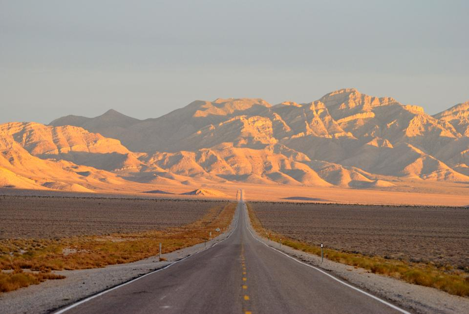
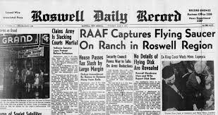
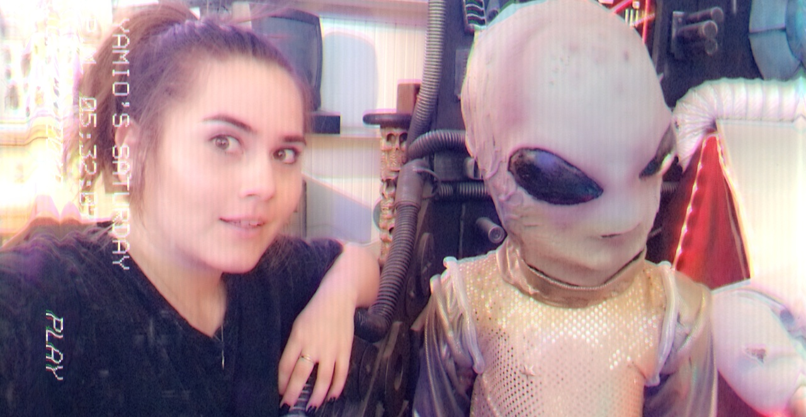

<!DOCTYPE html>
<html lang="en">

</html>

<head>
    <meta charset="UTF-8">
    <link rel="stylesheet" href="abduction_styles.css">
    <link rel="stylesheet" href="layout.css">

</head>

<body>
    <header>
        <nav class="horizontal"></nav>>
            <ul>
                <li><a href="index.html">Home</a></li>
                <li><a href="earlylife.html">Early Life</a></li>
                <li><a href="mteverest.html">Mt Everest</a></li>
                <li><a href="abduction.html">Abduction</a></li>
                
            </ul>
        </nav>

    </header>
    <section>
        
    </section>
    <section>
        

    </section>
    <article>
        <h1>Abduction</h1>
        <p>
            <strong>I've</strong> always been interested in
            aliens so I thought<cite>"hey why dont I go to the place best known for ufos?"</cite> so I decided to go to
            Roswell, New
            Mexico, Home of the ufo crash landing of 1947. I went in the summer of 1947 so I could spend plenty of time
            exploring and seeing the sights. They even have ufo tours where they take you around and show you sites of
            alleged ufo sightings. I wanted to get the real experienece so I decided to go out on my own and get the
            real experience. I went out to the desert in the middle of the night and to my shock a ufo came and beamed
            me up.
        </p>

        <p>
            They took me on their spaceship and at first I was scared but when I met the aliens they were actually
            really chill. They just wanted to hang out and take selfies like any other person my age on earth. They
            showed me around, saw some cool stuff, played with some gadgets, then before the sun came up they dropped me
            back down in the
            dessert. Overall a really amazing experinece. If you ever get the chance definately take it.
        </p>

    </article>
    <aside>
        
    </aside>
    <footer>
        All About Me: The Yamel Stories &#9830; 1234 Fake St, Madeup Town CA &nbsp; 95691&#9830; 916-867-5309
    </footer>


</body>